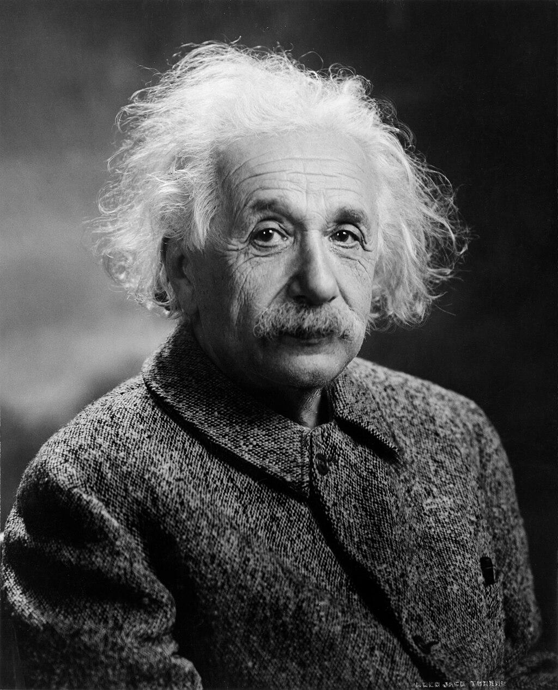

을유 시리즈
-
 책을 쓰는 과학자들
책을 쓰는 과학자들#5. “새들은 다 어디로 갔을까?”
『과학혁명의 구조』가 학계에 큰 영향을 주 었다면, 같은 해에 출간된 또 다른 책은 전 세계에 더욱 막대한 영향력을 떨치고 대중 에게 비교적 생소한 과학적 탐구 주제였던 환경주의를 소개했다.공공 정책을 변화시 키고 사람들의 전반적인 인식 수준도 높인 이 책이 수백만 명의 죽음에 간접적인 책
-
책을 쓰는 과학자들
#5. “마리 퀴리와 알베르트 아인 슈타인”
오늘날 매스컴에서 자주 접하는 과학자들 은 그렇게 유명해지기 전에 자신의 연구 분야에서 거둔 성취는 거의 없는 사람들도 있다 그러나 아인슈타인의 명성은 전적으로
-
 고통을 말하지 않는 법
고통을 말하지 않는 법#5. “아이들은 기억한다”
어느 날, 심야 라디오 방송에 다시아 블랙 이 나온다. 그는 제2차 세계 대전 때 훤히 공개된 은신처에 머물며 살아남은 여성이 다. 그는 아리아인 아이로 위장하고 폴란 드인 기독교도 가족과 함께 살았고, 무릎 을 꿇은 채 ‘올바른 신’에게 기도했으며,이 렇게 자신의 새로운 정체성을 너무도 꽉
-
 윤광준의 생활명품
윤광준의 생활명품#7. “기막힌 커피 맛의 비결 적정 온도를 지키는 드립 케틀”
좋아하는 일과 병은 떠들고 다녀야 하는 게 맞다. 더 많이 알고 능력 있는 이들을 만나게 될 개연성이 높기 떄문이다. 소문의 파장은 컸다